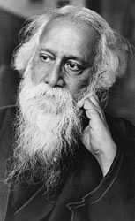

|

Rabindra-Nazrul
Jayanti in mukto-mona
|
Tribute to the World poet from Mukto-mona ....
25th Baishakh,
1409 Bangla year : the 141st birth
anniversary of Rabindranath Thakur,
the foremost icon of Bengali
literature and culture who
single-handedly transformed our
beloved Bengali language into its
today’s modern and mature form by
virtue of his extraordinary
creative genius. A true
internationalist in spirit and a
firm believer of universal
humanism, he toiled hard to
promote and propagate the Bengali
language and literature in the
world stage which eventually led
to his winning...... (Read
More) |
Rabindranath’s
141st birthday came and went by without a hiss!. By
A.H. Jaffor Ullah.
|
|
On May 8 (Baishakh 25) Bengal’s
greatest poet Rabindranath Thakur’s 141st birth
anniversary came. However, there was no mention
of it in any of the Internet newspapers
published from Bangladesh or in any forum
excepting Mukto-Mona. I was saddened by this
negligence of our newspapers and forum
moderators. Lately, we are so much wrapped up in
our work that hardly there is any time for
Rabindranath’s birthday celebration. The poet
had departed this mortal world nearly 61 years
ago when .... (Read
more) |
Tagore, if he
lived today…... By
Partha Banerjee.
|
 |
I ran into Gurudev Rabindranath
Tagore the other day on a busy Kolkata street.
It was Jorasanko, the neighborhood where he was
born in his legendary family house—the
ThakurbaRi. Of course, the area is now one of
the dirtiest in Kolkata, or for that matter, in
India. But that's beside the point. I didn't
anticipate I'd be able to strike up a
conversation with him. But somehow I managed to
do it. For the next few minutes, he put up with
my insolence, and graciously answered all the
stupid questions and comments I had for him. I
report that memorable experience to you... (Read
more) |
A Visit to My
Dream Land (Shantiniketon) ... By
By Iffat Imam.
|
|
Being an earnest fan of
Rabindranath Tagore visiting Shantiniketan had
been a long cherished desire for me. My dream
suddenly came true due to the 90th Foundation
Day of the Sakhawat Memorial School which I had
the privilege to join as an associate member of
the alumni. In this regard I am thankful to Mrs.
Sultana Zaman who made it possible for those of
us who were not connected to their association,
to accompany them. The event took place from
12th to 13th of January 2002. Our programme was
to spend five days in Kolkata and three days in
Shantiniketan.... (Read
more) |
Rabindranath Tagore - In Conversation with Albert
Einstein:
collected By
Avijit Roy
|
|
Tagore and Einstein met through
a common friend, Dr. Mendel. Tagore visited
Einstein at his residence at Kaputh in the
suburbs of Berlin on July 14, 1930, and Einstein
returned the call and visited Tagore at the
Mendel home. Both conversations were recorded.
The July 14 conversation is reproduced here, . ...(Read
more) |
Response to history:
By Hiranmay Karlekar
 |
Until his death in 1941, Tagore
towered over the rest of his contemporaries.
Awarded the Nobel prize for literature, he has
left a lasting imprint. It is a commentary on
the vitality of Bengali literature that even the
presence of a Tagore did not stultify the growth
of talent in others At the turn of the twentieth
century, Bengali had already emerged as a
remarkably versatile medium of expression, rich
in vocabulary and . ...(Read
more) |
Bangla Articles :

Don’t dwell on Nazrul’s wretched life; celebrate his
literature instead:
By
By Dr. A.H. Jaffor
Ullah
|
|
Poet Nazrul Islam could be aptly
called as the Keats of Bengal. Similar to
English poet John Keats who was a handsome man
and whose literary life was shortened by a
disease, our Nazrul too was a handsome man and
his literary geniuses only lasted from 1920
through late 1930s. In this short period of
quarter century or so, he wrote innumerable
poems and songs without even collecting a single
one for himself. . ...(Read
more) |
"Jobon na ami Kafer": Does Nazrul's own word mean
anything?
By By Dr. Kaushik Sen
|
|
I thought about writing a few
words on this issue on Rebel poet Kazi Nazrul
Islam for whom I myself have great appreciation.
"Does Nazrul's own words mean anything?". Well
it should but his words had been so different
from time to time that it is tough to figure out
one single ideology or even a consistent
evolution of ideas. Let me give a few examples
from his own writings to highlight these
inconsistencies.. . ...(Read
more) |
Listen
to some Nazrul Geeti
|